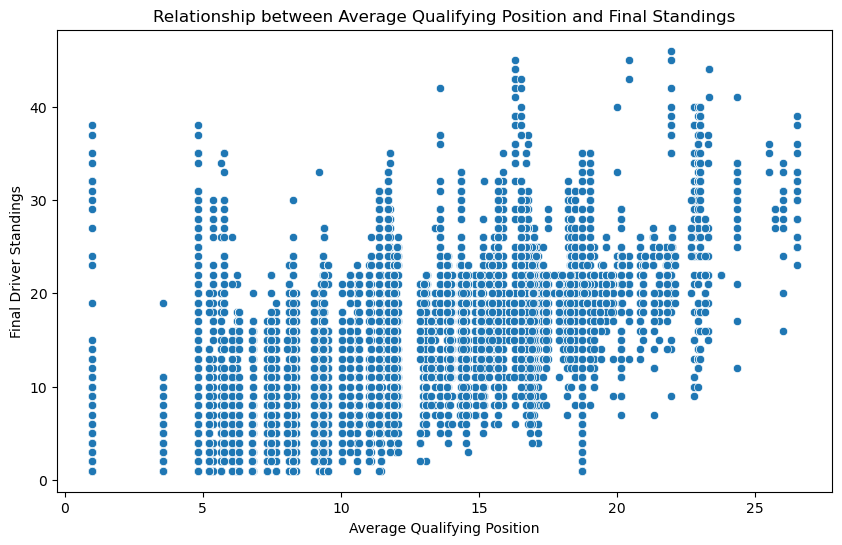
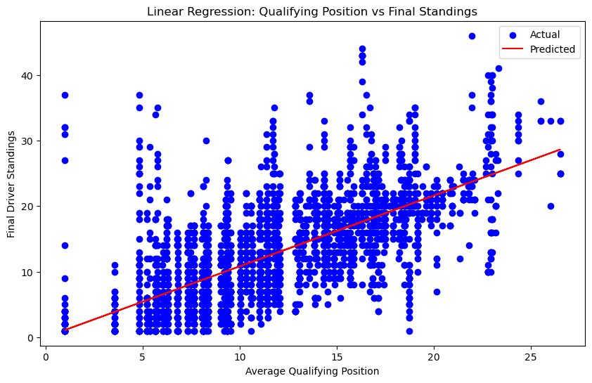

import pandas as pd
import numpy as np
import matplotlib.pyplot as plt
import seaborn as sns
from sklearn.model_selection import train_test_split
from sklearn.linear_model import LinearRegression
from sklearn.metrics import mean_squared_error, r2_score
qualifying_df = pd.read_csv('/Users/aidanconley/Documents/GitHub/qtm151spring2025/lecture_24/data_raw/qualifying.csv')
standings_df = pd.read_csv('/Users/aidanconley/Documents/GitHub/qtm151spring2025/lecture_24/data_raw/driver_standings.csv')
avg_qualifying = qualifying_df.groupby('driverId')['position'].mean().reset_index()
avg_qualifying.columns = ['driverId', 'avg_qualifying_position']
merged_df = avg_qualifying.merge(standings_df, on='driverId')
correlation = merged_df['avg_qualifying_position'].corr(merged_df['position'])
print(f"Correlation between Average Qualifying Position and Final Standings: {correlation:.2f}")
plt.figure(figsize=(10, 6))
sns.scatterplot(x='avg_qualifying_position', y='position', data=merged_df)
plt.title('Relationship between Average Qualifying Position and Final Standings')
plt.xlabel('Average Qualifying Position')
plt.ylabel('Final Driver Standings')
plt.show()
X = merged_df[['avg_qualifying_position']]
y = merged_df['position']
X_train, X_test, y_train, y_test = train_test_split(X, y, test_size=0.2, random_state=42)
regressor = LinearRegression()
regressor.fit(X_train, y_train)
y_pred = regressor.predict(X_test)
mse = mean_squared_error(y_test, y_pred)
r2 = r2_score(y_test, y_pred)
print(f"Mean Squared Error: {mse:.2f}")
print(f"R^2 Score: {r2:.2f}")
plt.figure(figsize=(10, 6))
plt.scatter(X_test, y_test, color='blue', label='Actual')
plt.plot(X_test, y_pred, color='red', label='Predicted')
plt.title('Linear Regression: Qualifying Position vs Final Standings')
plt.xlabel('Average Qualifying Position')
plt.ylabel('Final Driver Standings')
plt.legend()
plt.show()
summary_table = merged_df.describe().round(2)
print(summary_table)Correlation between Average Qualifying Position and Final Standings: 0.68

Mean Squared Error: 36.51
R^2 Score: 0.42

driverId avg_qualifying_position driverStandingsId raceId \
count 14292.00 14292.00 14292.00 14292.00
mean 236.98 11.81 38660.05 488.28
std 335.54 4.97 28267.73 381.44
min 1.00 1.00 1.00 1.00
25% 20.00 8.11 11748.75 165.00
50% 65.00 11.10 20912.50 319.00
75% 154.00 15.70 67523.25 914.25
max 856.00 26.50 71845.00 1098.00
points position wins
count 14292.00 14292.00 14292.00
mean 26.04 12.80 0.41
std 50.75 7.82 1.33
min 0.00 1.00 0.00
25% 0.00 6.00 0.00
50% 6.00 12.00 0.00
75% 27.00 18.00 0.00
max 454.00 46.00 15.00
#To predict the final standings based on average qualifying position, we use the qualifying dataset and the driver_standings dataset.
# We merge the average qualifying position from qualifying dataset with each driver's final season position from driver_standings dataset.
avg_qual = qualifying_df.groupby('driverId')['position'].mean().reset_index()
avg_qual.columns = ['driverId', 'avg_qualifying_position']
final_standings = standings_df.sort_values('raceId').drop_duplicates('driverId', keep='last')
final_standings = final_standings[['driverId', 'position']].rename(columns={'position': 'final_standing'})
merged_df = avg_qual.merge(final_standings, on='driverId')
merged_df.head()
# We then calculate the correlation between average qualifying position and final standings. The columns that we focus on are
# avg_qualifying_position: Lower is better (average grid spot) and final_standing: Season ranking (1 = champion)
# A positive correlation (closer to 1) indicates that drivers who qualify poorly (higher average position) tend to finish lower in the standings. Our correlation is .68 which indicates that qualifying position is a pretty decent predictor of final standings.| driverId | avg_qualifying_position | final_standing | |
|---|---|---|---|
| 0 | 1 | 3.567742 | 5 |
| 1 | 2 | 11.100000 | 11 |
| 2 | 3 | 6.834951 | 1 |
| 3 | 4 | 8.105572 | 2 |
| 4 | 5 | 13.883929 | 22 |